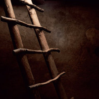
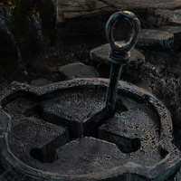
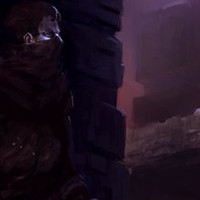
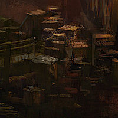

The first thing you notice is the large chasm on the other side of the room. From your vantage, it doesn't appear too deep. As you creep up to the edge and peer down, it's hard to tell where the bottom lies, as it is shrouded in darkness. You catch the glimmer of something sparkling in the depths of the chasm, although you can't be certain what it is. It looked... expensive. Was that the object you had read about? Before you get the chance to drift too far off in to daydreams of riches, there's a pounding now at this door. Luckily, you were able to bar this one when you entered, so you bought yourself a little more time than the previous room. Hopefully. Either way, looks like the way back is no longer an option.
one on the right side. The ladder on the left disappears in to the darkness of the chasm. The ladder on the right seems to have been cut short, as it hangs almost even with the ledge of the chasm, just about a four foot leap of faith, with confidence you're not sure you have. With the pounding getting louder, it's now or nothing, so you:




Jump to the Ladder on the Left and Climb Down to Investigate
Jump to the Half Ladder on the Right and Climb Up
Jump to the Full Ladder on the Left and Climb Up
Shimmy Over Ledge and Down to Chasm Floor
You get a running start and propelling yourself forward, leap out with outstretched hands, and amazed, grab hold of the rungs of the ladder. You can't believe you made that jump. Securely holding on to the rungs, it wouldn't hurt to just take a quick peek at the shiney bauble that caught your eye. As you reach the bottom, you take a look around. And there, in the corner of the chasm, a little sparkle catches your eye again. You carefully make your way over to it, it's so dark, and as you do, the earth beneath your feet feels almost wet. Like mud. Fifteen feet away. Ten feet. You're so close. It's almost within your reach. All of the sudden, as if out of nowhere, an identical shining object appears. From out of thin air you think, but the more the merrier. You reach out, and at your feet, another glittering sphere. Then to you left another, and another. Appearing all around you. Then they start to move. What the... Then you feel the sharp fangs in your feet. You turn your gaze down as a dozen of the shiny spheres gather around your feet. In the faint glow, you see, attached to each sphere, legs. Lots of legs. You slip. And there's so much pain. The last thing you see as the shock sets in, is a king's ransom of shiny, ferociously hungry sparkling treasure.
The ladder on the right is gonna take some real skill to grab on to, but if it were easy, anyone could do it right? A little acrobatics should be no problem for a skilled adventurer such as yourself. The pounding on the door is getting louder, and you can hear something heavy begin to pound against the other side. They must have brought a batter ram or something. Resourceful, these city guards. Best to get moving then. You step back until your back is against the wall, opposite the ladder. Deep breath, and you take off at a spring, running toward the ladder. You reach the edge of the chasm and leap out, hands outstretched. You eyes go wide as your hands close around the rung of the ladder and you tighten your grip. You did it, your made the jump and grabbed the ladder! ...But you're still moving. That's odd. You have but a moment to look up as you realize, with ladder in hand, that the other end must not have been afixed to anything, just simply draped over the ledge there. Well how do you like that, you think as you begin to fall, what careless son of a b...
Erring on the side of caution, you decide to make a jump for the full ladder on the left. As tempting as it is to head down in to the darkness to investigate that tiny sparkle, you've heard one too many a tale of horror of curiousity killing the cat. This far under the ground in a forgotten crypt, curiousity is the least of your worries, and an avoidable one. With a running start you throw yourself out over the chasm with arms outstretched and your hands manage to grasp on to the rungs of the ladder. You slam hard in to the wall, but you keep your grip, as you scramble to get your legs on the ladder as well and climb your way up to the ledge above...
You walk up to the edge of the chasm, and kick a few pebbles over. You hear them hit the bottom almost instantly. You knew it couldn't be that deep. What idiot would try and jump this chasm? You didn't make it this far by taking unnecessary risks. You decide to clamber over the ledge, drop down, then climb up the ladder on the other side. The sensible choice. You sit down with your legs hanging over the ledge, then slowly begin to turn and hang your legs down, supporting yourself with your arms. As you lower yourself, you still can't feel the bottom with your legs. You're fully suspended now, hanging and reaching out with your tippy toes to try and feel the bottom of the chasm. Still not finding purchase, you take a deep breath, and just let go to drop down to the floor below. You fall for a second as your right foot lands on the floor. Something is wrong though, as your left foot doesn't join your right in finding the floor. Instead, it finds only air, and as you stumble off balance and lose your footing, you topple over, turning in horror to look up as the ceiling begins to quickly grow distant. Where is that screaming coming from all of the sudden, you think, before realizing that it's coming from you...